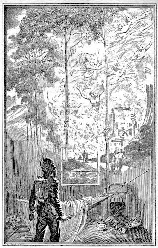

[Transcriber's Note: This etext was produced from
Astonishing Stories, October 1942.
Extensive research did not uncover any evidence that
the U.S. copyright on this publication was renewed.]

"I have come," said the little man, "a new Moses, to lead my people to the Promised Land." He said it slowly, with dramatic restraint. "Fate has led me to a star, and I have returned to show mankind the way to a thing it has not known for over a hundred years—hope!"
He was not quite five feet tall, with a chubby face and a beet-red nose, straw-colored hair, and mild gray eyes. He was nondescript. And it seemed very strange, somehow, that this ridiculous little man could stand there on that platform, with the gleaming majesty of that five-hundred-foot spaceship in the background dwarfing him—and facing that battery of telecasters, talk to two billion people and awaken in them a thing that had been dormant for a century or more.
He said, "We have died spiritually, and the eternal quest of man for contentment has almost ceased—for he knows, in his barren, bitter heart that there is no contentment to find." He paused, and the tremendous crowd that filled the rocket-ground were weirdly silent, waiting. "No longer shall only the Space Patrol know the thrills of adventure and discovery. We, too...."
Robert Lawrence smiled whimsically and cut off the televisor. It was almost impossible to hear the speaker, anyway, for no matter how well sound-proofed a Space Patrol ship is, the noise is still deafening to one not long accustomed to it. You can't stop the vibrations of an atomic engine.
Besides, the reference of the little man to the adventure and discovery of the Space Patrol was rather amusing to one who held that job, and was tired of it.
You took up a tight orbit around Mars and were bored to death for some four weeks, and then there was an order to intercept a gang of wild youngsters who had run past the Interplanetary Way Station without signaling, for the thrill of it.
Occasionally you sent out a call for a battle cruiser when you spotted a private ship that wouldn't answer your demand for call letters, and if part of the crew tried to run for it in the life rocket, you would chase them out as far as Venus before you got a magnetic grapple on them.
Then you risked your life, but it still wasn't much fun, because the crew was probably made up of a bunch of scatter-brained kids, with a hysterical finger on the trigger of their blasters, ready to kill instantly when you got them in the corner.
The rest of the time you dropped in on settlers who were sick and tried to bring them around; answered any call for help on the planet or in your sector of space; acted as a sort of watchdog; and wondered what the hell to do with yourself.
Still, it was the only life left for a strong, active man, and he had been following it for four years now and would certainly continue it until the little man's plans were carried out. And carried out they would be—of that he was confident. Proud, too. Proud that his quiet faith in the future of mankind had proven itself in spite of the contempt and cynical ridicule of some of the best minds in the decadent, dying Science Hall, where he had received his training for this job.
Not, he thought wryly, that they didn't have excellent reason for their cynicism. Few people had quite as much opportunity as he to see what was happening to the world, how effeminate its inhabitants were becoming. The patrol had been recently cut in half, not for any lack of material resources, but due rather to the fact that there weren't enough men to fill the ranks.
A man with sufficient stamina to be in the Patrol, plus the necessary mental and emotional stability, was practically unobtainable. Perhaps, he mused, that was why men in the Patrol married so well; they were the very cream of mankind, the finest group of its kind on earth. But the thought of women and marriage brought the old hurt and the old memory, and he turned his attention to checking his unquestionably accurate course in an equally old and equally futile attempt to forget the past.
Finding it correct, as he had known it would be, he leaned back in his chair against the centrifugal push of the ship as it banked slightly and headed in for Mars. Then a buzzer made frantic bees' noise, and he released the automatic pilot, taking the controls himself. The buzzer had been a warning that atmosphere was close, and it takes a human hand to handle a rocket in an atmosphere.
It was possible, of course, that this trip of his was purely a waste of energy, but it wasn't his job to guess; he was the type who made sure first—if he had not been, the Patrol would never have accepted him.
With one hand he reached over and flicked on the televisor.
He wouldn't be able to hear much, and already knew the general trend of the little man's plan, but to have that belief around which his entire philosophy of life had been built borne out by the man who was himself to restore mankind to the glory that was its heritage, to the ultimate fulfilment of its age-old quest—that, indeed, was worth the hearing.
The image of the little man snapped on the screen with an abruptness that was startling after the long minutes required for the televisor to warm up.
The colors were blurred from the distortion of millions of miles of travel in space, but the ruddy nose of the little man was still prominent.
Above the crashing pound of the rockets, Lawrence heard faintly, "... the psychologists have long known the reason for this soul-decay in man...."
The small room was so Grecian in its simplicity, with its shining marblelike walls, the bench of the same sea-foam white in the corner, and the three tunic-clad men, that the televisor screen set in the wall appeared incongruous and out of place.
"Hear him talk about 'the psychologists'," said Herbert Vaine, with a wave of his slender, beautiful hand toward the little unimpressive man on the screen, "when he knows more about applied psychology than any of us in this room. More than you or I, Stanton, or even Parker there."
He smiled cynically, and his eyebrows climbed an astonishing distance up his dome of a forehead.
Stanton grunted. He was a sour, disillusioned little monkey of a man, and prone, at times, to communicate largely by grunts. But now he spoke. "Be grateful. If it wasn't for that little runt we'd be fighting off a howling mob of neurotics and incipient schizophrenics right now. And not only is he giving us a holiday, he's practically saving the entire race.
"After that speech of his, there's going to be a wave of hysteria that will make the panic over that comet-striking-the-earth hoax way back in 2037, ninety-six years ago, look as innocuous as a Sunday school picnic. And it'll be healthy, it'll be the best that could possibly happen to this jaded civilization of ours, a safety valve for the pent-up emotions of over a hundred years! Lord, I hope he can go through with it—if they're disappointed after this renewal of hope, I dread to think of the reaction."
He paused, took a deep breath. "Listen."
"—were wise, those ancient ancestors of ours," came the voice of the little man, "but they did not have the background of experience that would have enabled them to predict what has happened. They realized that if machines became so perfect that they could do the work of man, without the guidance of man, then the hedonistic existence this would leave as man's only alternative, would quickly lead him back to the jungles.
"So they arranged a social pattern that would give every man something to do; you know what that pattern was as well as I. You might have an interest in constructing televisors, and you would strive to make your televisors so excellent that there would be a worldwide demand for them; others who had different hobbies would exchange the product of their hobbies for that of yours, or give them to you if the difference in value was too great.
"The world became one giant hobby field, a paradise apparently.
"They were wise; it was a good plan. But it didn't work.
"The machines were to blame. They could do things better, infinitely better, than human hands. You built televisors and put them together carefully with the proud hands of a creator. With your care and skill you were able to turn out, say, some ten televisors a month, but they were the best of their kind, and you were happy in that knowledge. Then you discovered that the machines could produce those televisors of yours at the rate of some five hundred a month, and could make a better one than you could, with all your patient toil and trouble. You were a rocket builder, a constructor of homes, a monocar designer? It was the same.
"Or perhaps you were an inventor? Why? That, too, was what the inventors wondered—and ceased to invent. There had been too many wonders, the world was satiated with wonderful things, and those who create more, found for them merely a bored acceptance. The acceptance was of the machine, not himself, for the majority of the population did not even know who had built the marvels that made their life so monotonously comfortable.
"The incentive to do good in this world died—there was no good to do. There were no physicians, because the machines could diagnose an ailment better than they; there were no diseases to eliminate because they had long been eliminated; there were no surgeons to operate, because the machines did it quicker, safer, better. There were no abuses to correct, no social conditions to improve, because there were no abuses, and the social conditions were Utopian.
"There was no longer any desire to achieve in writing, in art, in music—for achievement was no longer recognized. If your writing was packed with significance, with powerful, thought-provoking originality, then it probably would not even see publication. Those who wrote and were recognized were those who could thrill with screaming action, with the forgotten danger of the old, primitive days back in the twentieth century; cheap stuff produced by men who were more mechanical than the machines. The only art that any man recognized was illustrating posters and those stories. Beauty had become too tame. The swing, the jazz, of an earlier age had evolved into a nerve-racking bedlam of discordant sounds not even needing a composer—mechanically timed, mechanically produced, mechanically precise.
"Mankind lost its most precious possession—the sense of achievement, of being valuable, and with it lost its initiative. They suffered from a mass inferiority complex that was only too well justified by the superiority of the metal monstrosities they, the Frankensteins, had made.
"Something died inside the mind of man—his self-confidence, his superiority. And with it died achievement and progress. Mankind no longer lived. It existed."
His rather ridiculously high-pitched voice died quietly away as he paused and gazed into, it seemed, the room, as he had gazed into the empty temple of man's intellect but a moment before. And in that instant, standing there with his stubby hands on the railing of the platform, he had the surpassing dignity of one who sees conquest near and rejoices in the knowledge that his achievement has been something more than worthy.
"The result," he continued, "was inevitable. The hobby system, as it has been flippantly termed, dissolved in a chaotic attack on the machines. Fortunately, the mobs were too disorganized to destroy much before they felt the effects of their attacks. For men, subject to a cold they had never known before—due to their damaging the weather towers—died from exposure, untended by smashed machines that could have saved them. Everywhere hundreds of people, deprived of the comfort of machines they had come to regard as essential, died swiftly from unaccustomed hardships to which their delicate constitutions had been too long unconditioned.
"That, as you know, was the first and only attack on the machines. It had become apparent that they had not only degenerated man, but so degenerated him that he could not live without them.
"And so the present system of credits for the amount of work done by each person in his own line has come into being. It has not changed the situation. Man still has no excuse for living, only for existing.
"The frenzied, maddened search for some purpose, some reason for being, that has taken place since—I need not go into. It is a rather horrible thing to think about. And in the last twenty-five years it has resulted in a revolt against convention and the accepted decencies in life. That has led, in turn, to orgies, to abandoned pleasure-seeking that has no parallel in our written history. The frustrated creative genius of our time has found outlet shocking to more ordinary people—if any person can be called ordinary in this time and age. I do not believe there is such a person. I believe that we have all gone mad in our despair and in our lack of any intelligent goal."
The voice of Parker cut across the spell in the room like the explosion of a shell in a country graveyard.
"He's just made the world's biggest understatement. By the God of the ancients, he should see some of the human wrecks that come to us, that pack our offices, and practically hang from the fluorescent. Day after day, hundreds and hundreds of them. And we can only tell them what is wrong with them—not what to do about it. A noble profession ours, gentlemen. Hah! It's hollow. Hollow and futile. Like the mobs that visit us here at Science Hall and go away uncomforted, to wait until they go completely mad and are taken away to a mechanical madhouse presided over by the same magnificently futile psychologists. A noble profession indeed."
"We can't claim immunity from it, either, you know," said Vaine. "We're all too old to join the orgies, but we try to compensate for our helplessness, our uselessness, in other ways. You, Parker," he smiled at the chubby psychologist, "are a faddist who follows every single mad-eyed craze that crops up. You have no idea how strange you look right now without any hair at all on your face; no eyebrows, no eyelashes, a bald dome. You're a remarkable sight."
Parker colored. This turned him oddly red from his smooth chin to his bald pate, so that he rather resembled a beet carved into the form of a face.
"It's not a fad. It's a hygienic movement that I highly approve of."
Vaine's laugh left little echoes repeating themselves in the corners of that acoustically perfect room.
"What term would you use to explain away the time that you brought to your office some quack's mystic device which would supposedly soothe the patient by a mysterious mixture of vibrations and music made by the movement of the operator's hands in an eddy field? Remember how the frightful noises you hauled up sent three patients into hysteria, and so accentuated another's delusion of persecution that he focused his attentions on you as the cause of his troubles? Then he chased you all around the office with a metal chair, earnestly imploring you to stand still long enough to get your head bashed in.
"And how about the time you claimed it was the duty of every citizen to learn the intricacy of a certain machine—and blew out the side of the wall with the 'harmless' little projector you rigged up? Eh?"
He chuckled and a smile flickered for an instant on the face of the sour Stanton.
"You aren't too normal yourself," retorted Parker. "Spending all your time dashing around with other people's wives."
"Granted," said Vaine. "I'm an old fool and I know it."
He smiled somberly.
"Queer. We psychologists know exactly what makes us tick mentally, but we can't do anything more about our twisted emotions and impulses than we can do for those poor people who come to us for assistance we can't give them. Stanton collects old books. Never psychology, religion, or anything serious. What our ancestors called blood and thunder. Bang-bang adventure stuff. He calls it a hobby. It isn't. It's wish fulfilment."
He went on: "Look at that laughable little idiot on the televisor screen. He's the least imposing person I know of—and the happiest man on earth. He may be the greatest man who ever lived, for all I know. Listen to him."
"—man was useless. I knew that man must again find a motive for progress if he was to exist. The number of births had diminished almost to nothing. Both sexes felt that it was useless to bring children into such a world. So they did not, and the population has dropped frighteningly.
"After some time and thought I came to the conclusion that what was needed was another civilization with which our own could fuse its intellectual achievements and progress. For, it would be a new inspiration to find a race with a culture radically different from our own, and to adapt ourselves to that culture, to build shelters and new cities without the machines, and to bring back the old striving, ever-searching spirit of bygone days. And—I found it."
He stood there flushed with triumph. And the light in his face lit a similar light in the eyes and hearts of two billion people. Thus this modern Prometheus brought to earth a far more precious flame than did his predecessor of old.
"For the last fifty years," he said, "there have been no human trips made in a rocket—other than were absolutely necessary. As for exploring trips, there have been none beyond Pluto, and those by robots telecasting their impressions to earth; for we have lost the spirit of exploration, the spirit of discovery above all personal discomfort.
"At my request, the Central Consul built a spaceship suitable for a voyage to Alpha Centauri, which the electronic telescope revealed as the only star within its range having a civilization stationed on one of its planets. We used a device in the ship invented nearly forty years previous and completely ignored, which enabled us to make very nearly the speed of light."
Stanton interrupted the voice of the little man there. "Wonder how he managed to get permission to build the ship from that gang of ghouls. There was nothing they could get out of it, and it took a lot of credits."
Vaine said: "We're underestimating that little genius, I think. He grew up with an inferiority complex not brought on by the machines, but merely accentuated by it. He was one of those people virtually born that way; without any special ability except for bungling things in general.
"He's a type that every psychologist knows, the born failure. Only he had something in him that none of the others had. Something almost forgotten nowadays, and exceedingly rare in a person of his personality makeup: guts. There's a rumor that he spent years accumulating enough blackmail on the members of the Consul, after they refused him the first time, to force them to build that ship. I believe it.
"If he's right he'll go down in history, if he isn't right—then there won't be any history."
"Throttle down and listen," suggested Parker.
"Alpha Centauri has four planets," said the little man, "and the second innermost was our destination. We found that it had every conceivable advantage. The people were advanced scientifically, and evolved from a protoplasm basis that was, not unnaturally considering the similar conditions, along our own lines. They were rather ludicrously like certain twentieth century writers' conception of Martians and other extra-terrestrial creatures, particularly considering that no intelligent life has been found on Mars or the other planets in our system.
"They were small, with strangely faceted eyes, and two long slim cords for arms, these terminating in three thin fingers." He paused and repeated that, to emphasize such a familiar human characteristic. "Three fingers."
He continued: "They had no facial features outside of their eyes. They apparently perceived sounds by vibrations through their glossy black 'skin', if I may use such an inappropriate phrase, and their body was a cylinder and nothing more. They transported themselves in swift little cars, and how they got around before they progressed so far, I don't know. Probably they had some other method of physical motivation that has disappeared in long centuries of disuse. It does not matter. What does is the fact that they are an intelligent, sensitive people, and they have a great civilization, being able to communicate by means of telepathy, as many of our own people are able to do quite well.
"We hastened back before we had an opportunity to learn much about them, but were assured that we were welcome to their planet by their governing group.
"And the best news of all, is that it will not be necessary to build expensive ships to make the long trip! They have long had teleportation devices that enable them to transport the disassembled atoms of an individual or material to any distant place on which it is focused, no matter how far, there to be reassembled. The process is an extremely complicated and cumbersome one, requiring much mathematical calculation, but it can be done with absolutely no danger to the person using it. We have the plans for those machines."
The sound of cheering from the televisor became so ear-splitting that Vaine cut the volume, and then stood there, numbly cracking the fingers on his beautiful hands.
The picture on the screen whirled dizzily as the frantic operator panned too swiftly to pick up the image of the crowd, which was going mad with an enthusiasm that hurt them inside until they had to get it out, release it, let off their emotional energy. Women fainted, men wept, and the platform swayed dangerously as the amok crowd climbed over it to shake the hands of a new Messiah.
"I'll be damned," whispered Vaine, trying to comprehend hope, "I'll be completely damned." He cracked his long fingers slowly.
Stanton looked at his sandals as if he had never seen them before, and scowled. Parker ran his hand through his hair absently, forgetting that he no longer had any.
There was a buzzing in the next room.
Parker cursed all visaphones and vanished into the other room. They heard a bellowed, "Pleasure to you, too, and what the hell do you want?" Pause. "Oh." Another pause. Then: "Glad to hear it, Martin. Yes, it's a great thing all right. Huh? ... sure; thanks. Same to you. Glad you changed your mind. Pleasure, Martin."
Parker came back into the room. He tugged absently at his ear lobe. There was a strange look on his face. He noticed the stares of his fellow psychologists, and answered the question in their eyes.
"Remember that old duck, Martin Winter, the one with the registry full of credits he don't know what to do with—who came in here last week?"
He went on without waiting for an acknowledgement of acquaintance from the other two. "The old fool positively refused when he was here last time to have a transference to a robot body because he said he didn't have anything worth living for. But now he's determined to have the transference made, and to get transported to this other system. Wished me a happy trip over."
"Oh," said Vaine softly.
The voice of the little man came again into the room.
"Adventure," he said. "Adventure for all of us, and hope, and happiness." His voice trembled a little with the immensity of his own vision. "A new heaven and a new Earth, and a new dream for all mankind—everlasting, eternal, enduring for all time!"
His voice was drowned by a crowd roar that filled the room, then died away.
The jets under the ship came to life with an ear-splitting whoo-o-om! and the ship leveled off and hurtled west.
Electrical impulses touched the desert outside and rebounded to register on a dial the information that his distance from the ground was two thousand feet. He consulted another dial and found that the rocket was traveling a little more than eighteen hundred feet a second. Too fast. He cut it down to a thousand feet. Instruments were checked.
The energy waves he had received in space had come from the most desolate part of Mars. Lawrence was unable to understand why anyone chose this part of the planet to live on.
It was barren of the Martian planets collected by the settlers for their medicinal and museum value on earth, and it was far from the closely-clustered settler's towns. Which was strange. The settlers, he thought with a smile, made a lot of their being pioneers and all that sort of thing, but they loved their mechanical comforts and the warm, close companionship of their fellows.
He reached over and flicked the switch of the visor set in the nose of the ship for observation purposes. The scene revealed was as disappointingly prosaic to him now, as it had been when he had first seen it. It looked just as the mid-western deserts used to look before the Consul had turned them into fertile agricultural grounds, with one exception: the ground was as red as blood, even in the feeble light of the Martian moons.
There was a wind blowing, carrying the sand and the half-vegetable, half-animal "tumblies" along with it. But the wind always blew on Mars at this time of year, despite the thin air, when one was this near to the pole.
The shack he had been watching for, loomed dark and dismal in the black of the Martian night. Lawrence cut his rear jets and throttled down, aiding the ineffectual gliding surfaces of the rocket with occasional blasts from the hull. He landed with a very slight jar and cut the engines.
The racket of the engines in a rocket is so violent that it is always something of a shock to a rocket man when he cuts them off. The effect is as though something very vital had died.
Lawrence stood there trying to accustom his ears to the silence that claimed the ship, saving only the weep of the wind outside. And the wind became, in that moment, as all-pervading, as much a part of things as the rockets had been. The difference was that the rocket noise existed for only a brief while, and the wind had moaned out on those somber plains for—how many millions of years had it been?
He shook off the mood, drew on a light, electrically-heated suit with an oxygen container on the back. It completely covered every part of his body, and was especially designed for Mars, having two metaglass openings for his eyes and a voice amplifier just below it.
After that, he stepped out into the air-lock, the sound detectors catching the whoosh of exhausted air, and the faint crunch of his weighted boots in the Martian sand.
The shack was of metal, neat and compact. One side of it bulged like a tin can in which a firecracker has exploded. He stumbled over something in the sand—but he did not look down. The ground was covered in spots with strange relics of a Martian civilization here in this desert.
In the early twenty-first century, during the rush of excitement over interplanetary travel, there had been many expeditions to this part of the planet. In fact, the shack in front of him was probably one of the Smithsonian's archaeological stations. It had been supposedly long-deserted, though he had evidence that it wasn't now.
The expeditions had accumulated enough evidence from the desert to prove conclusively that the Martians had been a highly civilized and advanced people; more advanced, probably, than Earth. There were ruins of great cities in the south of the planet that must have been there for over two million years. The Martians had built well. As to what had happened to them—that was a mystery that remained unsolved. There had been no evidence of warfare of any sort, and a few rare translations of even rarer books, indicated that the Martians had eliminated diseases and had, in their time, colonized the entire solar system with their people. But now there was only the weeping wind and the barren sand—nothing more.
He reached the door, twisted the handle on it. Having suspected that someone was inside, Lawrence was not surprised when it came open easily with a sharp creaking sound. It had been recently used, of course, since otherwise the years would have rusted it to the extent that the first man to open it again would have had to exert a great deal of strength. It was monometal, but everything except lead and a few beryllium alloys rusted in the Martian air.
He took a torch from his utility bag, and the soft but brilliant green of the portable Howard-Brazier fluorescent stabbed into the darkness and tore away the shadows. There was nothing in the path of the beam that he could see. Only the red dust on the wings of the restless wind.
He went in.
The door creaked shut behind him. A tiny air purifier made sighings somewhere like a big dog with asthma. There was a bare metal table. And that was all. A door led into another room. He walked into it. Silence, save for the moan of the deathless wind, crying outside.
It was dark in the room, with only the light of Deimos and Phobos shining into the glassite windows. He could just make out the darkness-shrouded bulks of shattered machinery in the corner. He pressed the button on his torch and the darkness fled in panic from the brightness of the light.
The whisper in his brain came then. "Don't...."
His flashlight clattered to the metal floor, and his hand was on his blaster. Then he cursed himself for a fool and retrieved his torch. He did not, however, turn it on again.
To be startled like that by mental telepathy was childish. It was something that every member of the Space Patrol had to master, and was an ability fairly common among intelligent people—many of whom practiced the art as something of a hobby. The only element of surprise was the fact that it was a strain on any ordinary man to project his thoughts that way, and speech was preferable when practicable. Still, there was no reason why anyone should not use telepathy if he wished.
"Who—" he began aloud, then shrugged and concentrated on thinking: "Who are you?"
"Speak aloud," came the thought. "It is easier for you, and makes your mental impulses clearer."
There is an individuality in thoughts, as well as in voices and faces. It occurred to Lawrence that the thought waves of this person were the clearest, the gentlest and the saddest of any he had ever encountered.
There was a clarity about them that was superhuman, that is associated with genius. And they were filled with a sorrow that transcended all human understanding. The sorrow of a dying race, of the shattered dreams of a billion years, the sorrow of the Wandering Jew alone on another planet and watching his own dissolve into cosmic dust—a sorrow beyond expression.
He found it dominating his soul, drowning him in a bitterness such as he had never dreamed possible.
Lawrence explained, "My instruments detected a steady stream of free gamma rays out in space, such as could only come from a ruptured atomic power source of some sort, and I flew down to ascertain if there had been an accident." He raised his voice a trifle over the wail of the desert wind. "Who are you?"
The brooding thought crept slowly into his mind, infinitely sad, infinitely weary.
"I am one who saw too far. It is no good for any being to go ahead of his fellows; to dream a greater dream and to find no reality in it. I had a machine, and it should have carried me outside, should have taken me above our lost visions to finer things. It did not. I thought I would climb to heaven. I descended to hell. How they have reversed our ancestors' prophecies, these metal masters of ours." His thoughts washed away in a tide of ultimate despair.
Lawrence's eyes were becoming accustomed to the darkness, and he could make out the hammock in the corner of the room with the small form upon it. "You're hurt!"
He came forward, his bewilderment becoming concern. "Here, I'm one of the few men who still know something of medicine. Space Patrol men have to know in case the machines break down. Which," he grimaced, "happens about once in every four hundred years."
"No!"
The thought stopped Lawrence on the verge of tearing the threadbare cover off the figure on the cot and turning on his flash to examine it.
"Please," it came again, more gently, "I am dying. Believe me, there is nothing you or any other man or machine could do. And I do not care to live any more now; there is nothing to live for—now or for the rest of time."
Pieces of what seemed to be a pattern exploded in Lawrence's brain, and he turned white. Had this man used the disassembler, obtaining it by bribing some minor member of the little man's crew, and had he visited that far-off star and found that which doomed mankind's new hopes? The thought stunned him beyond thinking. That couldn't be true; it couldn't. This was man's last hope, his last stand, it was unthinkable that—
He felt within his brain, currents that were at first puzzled and then cleared.
"No—" and there was a smile in Lawrence's mind, a heartbroken, whimsical thing. "No, I have not been to that system you are thinking of; my journey has been elsewhere. And what I have seen has led me to destroy both my machine and myself." He was silent a moment, overwhelmed by disappointment.
Then, "Let me explain, please.
"In our world we know not happiness, have not known it for such a long, long time. The machines have taken over and there is no longer anything left—only the bare drabness of day after futile, empty day for all our lives. Some feel these things more than others, and the idealist, the dreamer, have suffered in this age more than any other person can conceive. We feel so much, so very, very much, and we long so hard for the little, insignificant things that make up beauty—for beauty is our life."
The wind outside sang a song of other days, of laughter and beauty, and the glorious fortress of mental and physical perfection that had been here. It spoke of the shining towers, and glistening ships that thundered above them.
Then it remembered and died slowly away, taking with it the red dust that drifted across the barren plains.
"Yes," said Lawrence, very softly. "Yes, I understand."
"Not quite," came the whisper in his brain. "You do not, cannot, quite understand. There are things you do not know."
Silence then. Except for the eternal wind and its companion, the dust.
"I disassembled my atoms," the explanation echoed unexpectedly in Lawrence's mind, "and selected a lonely place on another world where they were reassembled. I watched from afar, and there, too, it was the same. The machines. The uncertain, hurt look in people's eyes, and—their lack of purpose.
"I destroyed my machine and myself with it. That was best. There was nothing left for me, you see."
Lawrence stood up by the dusty televisor against the wall. There was infinite compassion and understanding in his voice. He said, "If only you had waited! If only you had known that another planet in another system had a place for us, instead of going elsewhere as you did—without thought or direction."
"There was thought and direction," said the mental voice. "It availed me nothing. Bury me, please, out there on the desert with the wind and sand. I would be with seekers like myself, knowing that their search is impotent, as was mine. Thank you for your good intentions and your kindness. Good-by, my friend."
The sense of rapport faded from Lawrence's brain, and he knew he was in the presence of death. The requiem of the wind sang for another lost thing now, and that was queerly fitting, somehow.
Then he knew! Knew that the being had indeed traveled to other than the little man's star system, and his heart cried out within him unbearably, though he stood still and numb. Knew it when he had picked up the other's hand to place it beneath the covering and had felt—three slender fingers.
The quest was ended.